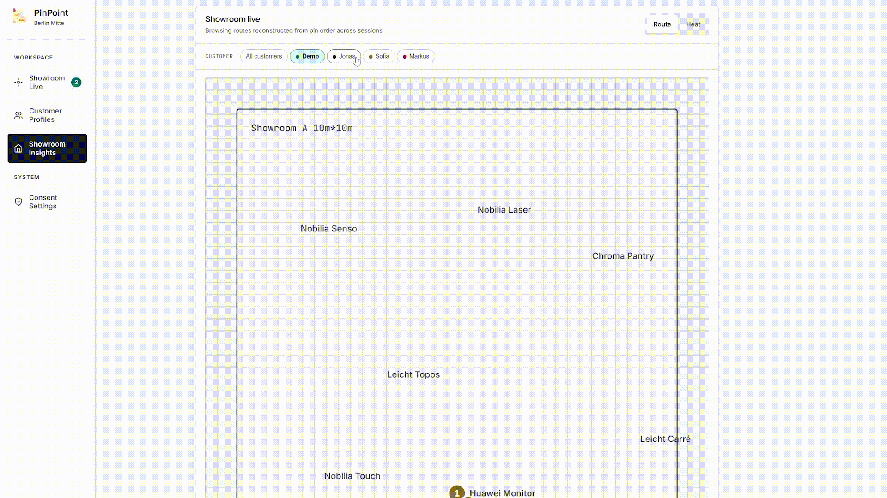

PinPoint is a spatial intelligent showroom tool, built on Snap Spectacles and Snap Cloud, that lets customers attach spatial voice notes to real products as they browse. A customised AI pipeline turns those notes into a structured preference profile, surfaced to the sales team through a live web portal, so they walk in already knowing what to show, what to skip, and what the customer actually cares about.
The customer already told you everything, before you ever said hello.
Challenge Context
Built for XRCC 2026 ↗, the world's largest independent XR & AI hackathon. Track: Snap Spectacles + Visual Sales. The brief asked how Spatial AI on Spectacles could solve real problems in physical retail, where intent is spatial but communication is verbal.
We built the first version over roughly two weeks in April 2026 during the online phase and were selected as finalists. We then continued developing the prototype, ran field research in London, and presented the updated build in Berlin in early July to an audience of industry professionals, judges, and XR creators, where the project was awarded Runner Up.
Problem
Showroom customers form rich spatial preferences while browsing, then lose most of them the moment a salesperson asks "how can I help you?" Lost preferences are lost revenue.
Three problems cascade from this:
Discovery is lossy. Salespeople spend 15+ minutes rebuilding preferences the customer already formed, much of it lost in translation: "the one over there," "something like that but warmer."
Decision fatigue stalls deals. 40 to 60% of qualified opportunities end in "no decision" as choice overload sets in.
Knowledge doesn't persist. After staff turnover or a return weeks later, the original visit's context is gone.
Field Research
We took PinPoint to the showroom floor in London, interviewing salespeople and customers at a furniture and kitchen showroom on Tottenham Court Road, and walking them through our web portal and demo videos. Their feedback was overall positive, and several moments mapped straight onto our problem statement and roadmap.
Size cannot survive a photo. A customer wanted to share a piece with her partner, but a phone photo left him unable to tell how big it was or simulate it in the room. The group proposed renting glasses to see the real size at home. This validated our Live AR recommendations today and at-home size visualization on the horizon.
The spec card is a friction point. Product dimensions lived on a physical card both parties agreed was hard to read. This validated curated digital preset notes that present key facts in a visually engaging way.
Preference tracking is manual. A salesperson literally asked the customer, "do you keep track of them?" This validated a persistent customer profile that accumulates across the session and survives staff turnover.
Reasoning splits by form, color, and material. One customer liked a shape but wanted another shade, and ruled out leather and textile on functional grounds. This validated structured intent extraction that separates style, color, material, and budget signals.
Staff also described a large two-floor layout where, when short-handed, they have to run between floors to serve customers. This directly supported the portal's remote awareness through the live feed, route map, and readiness signal.
Concept
PinPoint is a self-service spatial briefing system. The customer wears AR glasses and reacts to products naturally. The AI pipeline binds each reaction to the exact product, folds it into a structured profile, and surfaces it to the sales team through a live web portal before the conversation even starts. The loop runs both ways: spatial briefs travel from customer to salesperson, and live AR recommendations, rendered true to physical size, travel back.
One loop, two points of view. On Spectacles, the customer looks, touches, or points to spawn a note, speaks a natural reaction, crops references they brought along, and sees recommendations appear in their space at true size. On the web portal, the salesperson watches briefs arrive live, reads the structured profile before approaching, pushes a recommendation straight into the customer's view, and reviews the profile together to share liked items.
PinPoint is built as two intentionally asymmetric surfaces. A shopper will not wear a tethered headset, so Spectacles stay a lightweight capture-and-display surface only. All heavy AI runs in the backend, keeping the glasses responsive. The salesperson stays off glasses: their job is triage and synthesis across many customers, which belongs on a screen already on the floor, and they need eye contact to build trust. Spatial position is recorded data, not draggable decoration. Anchors earn their place only where position over time is the actual insight.
Experience Flow
1. Pin, speak, and crop
The customer looks at, touches, or points to a product to spawn a note and speaks naturally, for example, "I love this handle style but the color is too cold." Image, voice, transcript, and anchor bundle into one brief pinned to the exact product. Customers can also crop furniture pieces or external references they brought along and voice-note each. Notes are world-locked, so a returning customer reloads past pins in place and the profile keeps accumulating across visits and staff turnover.
2. AI preference extraction
Snap Cloud edge functions bind each voice note to the specific product the customer reacted to, match extracted intent against the catalog, and analyse reactions for style, color, material, and budget signals. Signals accumulate into a structured profile as the customer browses. For example: "Warm modern. Handle-less fronts. Mid-range budget. 6 products flagged, 4 positive, 2 negative." Real IKEA products with true dimensions serve as the placeholder catalog.
3. Showroom Live dashboard
A real-time feed of the customer's spatial briefs as they arrive: image thumbnails, transcripts, AI tags, and pre-matched product suggestions. When the customer captures enough signal or signals readiness, the salesperson is notified and approaches with full context, with no cold "how can I help you?"
4. Live AR recommendations
When the salesperson taps Spawn in AR on the portal, the recommended piece appears true to its real physical size. Touch it and eight control dots let the customer rotate and move it in their space, closing the size uncertainty gap our London research surfaced, where a phone photo could not convey how big a piece really was.

5. Live route visualisation
Each pin captures its position at creation. Ordered by time, the pins reconstruct the customer's path (what drew them in first, where they went next, where they lingered) and render in the portal's Showroom Insights page. The route map is built and wired on the portal; live coordinate capture is the last mile.
6. Customer profile & showroom insights
Customer Profile carries the persistent profile: preferences and flagged products accumulating across the session, reviewed together with the customer and shareable with family or friends. Showroom Insights adds a computed route summary and per-product breakdown with themes and verbatim quotes. On the horizon: at-home size visualization, curated preset notes, attention heatmap, and shareable session recap emails.
Business Value
London field research and a wired end-to-end prototype point to measurable floor impact, not just a demo concept.
Replaces 15+ minutes of lossy discovery with a structured brief ready before first contact
Lets customers judge true-to-size recommendations in AR, addressing the gap a phone photo cannot close
Builds a persistent customer profile so preferences survive staff turnover and return visits
Extracts structured intent across form, color, material, and budget, the way customers actually reason
Gives salespeople remote floor awareness across multi-floor layouts through live feed, route map, and readiness signals
What I Built
My main focus was connecting the Spectacles experience to a structured backend and companion web system: the full pipeline from spatial capture to salesperson-facing intelligence.
I worked on:
Early concept and product direction for the three-layer system: AR capture, AI processing, and web portal
London field research at a furniture and kitchen showroom, interviewing salespeople and customers, and testing the portal and demo videos against real showroom workflows
Schema-first data model and Snap Cloud edge function architecture with separate deployable functions for detection, preference extraction, catalog matching, and realtime sync
AI and service integration for transcription, product detection, intent analysis, and preference extraction against the IKEA catalog
Lens-to-backend integration through Snap Cloud and Remote Service Gateway, including the capture/viewing layer split
Building the companion web portal with three pages, wired to Snap Cloud Realtime
The result is a distributed system wired end to end: Spectacles create the spatial note, edge functions structure the intent, and the web portal makes it actionable, persistent, and bidirectional, including live AR recommendations pushed back into the customer's view.
System Design
Three surfaces, one backend, deployed end to end. Two architectural choices were deliberate: the AR app is split into a capture layer (pin creation, voice transcription, route position) and a viewing layer (world-anchored note reload, salesperson-pushed recommendations), and the Snap Cloud backend runs as multiple independent edge functions rather than a monolith. Each deployable on its own, which kept integration and debugging manageable across a distributed pipeline spanning two frontends.
┌────────────────────┐ ┌──────────────────┐ ┌────────────────────┐
│ Snap Spectacles │◄─────►│ Snap Cloud │◄─────►│ Web portal │
│ (Customer AR app) │ │ (Backend) │ │ (Sales staff) │
└────────────────────┘ └──────────────────┘ └────────────────────┘
capture layer edge functions Showroom Live
viewing layer Realtime + Storage Customer Profile
world-anchored pins product detection AI Showroom Insights
live AR recommendations catalog matching route map & recap
crop & spatial anchors preference extraction live AR spawn
Spectacles (Lens Studio)
Built in Lens Studio with a deliberate capture/viewing layer split. The capture layer handles pin creation, voice transcription, image capture, calibration, and route position recording. The viewing layer reloads world-anchored notes in place across sessions and renders salesperson-pushed recommendations at true physical size. Heavy AI stays off-device to keep the glasses responsive and avoid thermal throttling.
Snap Cloud
The intelligence layer runs as independent edge functions, not a monolith, covering product detection, preference and intent extraction, catalog matching, and realtime sync. A schema-first data model stores customers, sessions, pins, products, visit summaries, and recommendations, with pin positions stored as pos_x and pos_z in meters for route rendering. The catalog uses real IKEA product data with true physical dimensions.
Web portal
Built in HTML, connected to Snap Cloud Realtime. Three pages serve three jobs: Showroom Live for the real-time pin feed and AR spawn; Customer Profile for aggregated, persistent preferences; Showroom Insights for the live route map, route summary card, and per-product breakdown with themes and verbatim quotes.
The companion web portal is where spatial capture becomes salesperson intelligence and where the bidirectional channel lives.
Showroom Live renders each pin as it arrives: image thumbnail, transcript, AI tags, and pre-matched product suggestions. When the customer is ready, the salesperson approaches with full context. From the same surface, they push Live AR recommendations back into the customer's Spectacles view at true size.
Customer Profile carries accumulated preferences and flagged products across the session. Showroom Insights turns anchored pin positions into a live route map and catalog intelligence (entry hooks, strongest sequences, deliberation signals, and underexposed products), giving the business a floor-level view that compounds over time.